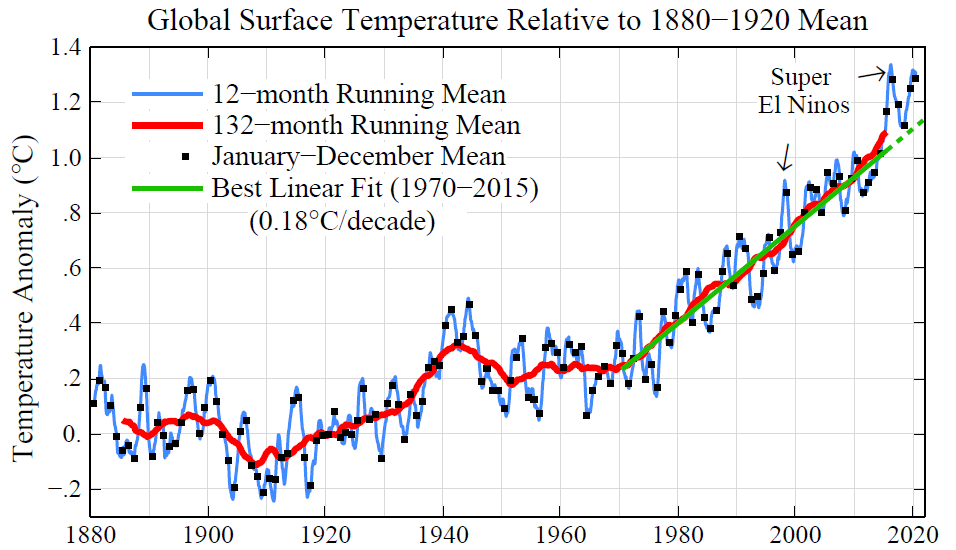

D NEWS
D.1 210220 US SCC Update in Progress
In its 2013 revision of the SCC, the Obama IWG arrived at a central value of around US$50 per tonne of CO2 emitted in 2020 (all values expressed in today’s dollars). It also established a range for the SCC ($15–75) and presented an estimate at the 95th percentile ($150). The time is ripe for this update,
That IWG did a careful job, but devastating storms and wildfires are now more common, and costs are mounting. Advances in attribution science mean that researchers can now link many more extreme weather events directly to climate change, and new econometric techniques help to quantify the dollar impacts. The monetary losses exceed the predictions of early models. The same goes for sea-level rise and many other types of damage.
Plenty of scientific and economic judgements need to be made. These include how to deal with endemic uncertainties, including sudden and irreversible ‘tipping points,’ such as ice-sheet collapses. Ethical questions must be considered, including the consequences for vulnerable communities and future generations.
Revising the SCC will take extensive research. A 2017 study by the US National Academies of Sciences, Engineering, and Medicine proposed building a new climate-economy model based on modules — separate components that handle climate change, socio-economic projections, damages, valuation and discounting
Other nations use widely different SCC values or overall approaches2. Germany’s 2020 guidance presented two values: €195 (US$235) and €680 ($820). Some countries instead establish a goal for emissions reductions (such as the United Kingdom’s 68% reduction by 2030 compared to 1990 levels) and then focus on minimizing the costs of achieving it, estimated at $20–100 per tonne of CO2. This is called a target-consistent approach.
D.2 210215 Focus on Steel, Meat and Cement
Bill Gates has written about Climate Change.
His assessment is that there is not the time, money or political will to reconfigure the energy sector in 10 years, and encouraging an impossible goal dooms the world to short-term measures that prove insufficient.
Crucially, people need to radically change how they produce the worst climate offenders: steel, meat and cement. Making steel and cement accounts for roughly 10% of all global emissions, and beef alone 4%.
D.3 210127 10 New Insights in Climate Science 2020
Someof which are:
● Earth’s temperature response to doubling the levels of carbon dioxide in the atmosphere is now better understood. While previous IPCC assessments have used an estimated range of 1.5–4.5°C, recent research now suggests a narrower range of 2.3–4.5°C.
● Emissions of greenhouse gases from permafrost will be larger than earlier projections because of abrupt thaw processes, which are not yet included in global climate models.
● Global plant biomass uptake of carbon due to CO 2 fertilization may be limited in the future by nitrogen and phosphorus.
● Rights-based litigation is emerging as a tool to address climate change.
Moving forward, the latest research calls for innovative, imaginative, and transformative approaches to building sustainable and resilient human societies. For instance, by strengthening global cooperative frameworks and building new governance arrangements that can include bottom-up community initiatives. In the short term, we have a one-off opportunity to get on the right path by directing post-pandemic recovery spending to green investments. If the focus is instead on economic growth, with sustainability as an afterthought, it would jeopardize our ability to deliver on the Paris Agreement. Alarmingly, governments do not yet seem to be seizing the opportunity to shift towards low-carbon, healthier, and more resilient societies.
D.4 210130 Adaptation Summit
Climate change adaptation seems to be a fairly new concept to many leaders. It were sometimes mix-ups with mitigation during the high-level talks. Mitigation and adaptation are both important and sometimes they overlap, so mix-ups are understandable. Climate adaptation involves many communities and disciplines (e.g. weather forecasting, climate services, regional climate modelling, “distillation“, disaster risk reduction).
Financing is clearly needed for climate change adaptation. To ensure progress and avoid lofty visions without results on the ground, there may also be a need for tangible results and to show examples and demonstrations. One specific type discussed at the summit was “Early warning systems” which play an important role.
But early warning systems, the way I understand them, don’t provide information about climate risks on longer timescales. Weather and climate – short and long timescales – are of course connected but nevertheless different
D.5 210118 Warming all anthropogenic
Parties to the Paris Agreement agreed to holding global average temperature increases “well below 2 °C above pre-industrial levels and pursuing efforts to limit the temperature increase to 1.5 °C above pre-industrial levels.” Monitoring the contributions of human-induced climate forcings to warming so far is key to understanding progress towards these goals. Here we use climate model simulations from the Detection and Attribution Model Intercomparison Project, as well as regularized optimal fingerprinting, to show that anthropogenic forcings caused 0.9 to 1.3 °C of warming in global mean near-surface air temperature in 2010–2019 relative to 1850–1900, compared with an observed warming of 1.1 °C. Greenhouse gases and aerosols contributed changes of 1.2 to 1.9 °C and −0.7 to −0.1 °C, respectively, and natural forcings contributed negligibly. These results demonstrate the substantial human influence on climate so far and the urgency of action needed to meet the Paris Agreement goals.
D.6 21014 Globale Temperature 1880-2020

The rate of global warming has accelerated in the past several years. The 2020 global temperature was +1.3°C (~2.3°F) warmer than in the 1880-1920 base period; global temperature in that base period is a reasonable estimate of ‘pre-industrial’ temperature. The six warmest years in the GISS record all occur in the past six years, and the 10 warmest years are all in the 21st century. Growth rates of the greenhouse gases driving global warming are increasing, not declining.
[GISSTEMP 2020 Update] (https://mailchi.mp/caa/global-temperature-in-2020?e=96d59a909f)
D.7 210104 Not so long lag?
Until recently, Mann explained in The Guardian, scientists believed the climate system—a catch-all term for the interaction among the Earth’s atmosphere, oceans, and other parts of the biosphere—carried a long lag effect. This lag effect was mainly a function of carbon dioxide remaining in the atmosphere and trapping heat for many decades after being emitted. So, even if humanity halted all CO2 emissions overnight, average global temperatures would continue to rise for 25 to 30 years, while also driving more intense heat waves, droughts, and other climate impacts. Halting emissions will take at least twenty years, under the best of circumstances, and so humanity was likely locked in to at least 50 more years of rising temperatures and impacts.
Research over the past ten years, however, has revised this vision of the climate system. Scientists used to “treat carbon dioxide in the atmosphere as if it was a simple control knob that you turn up” and temperatures climb accordingly, “but in the real world we now know that’s not what happens,” Mann said. Instead, if humans “stop emitting carbon right now … the oceans start to take up carbon more rapidly.” The actual lag effect between halting CO2 emissions and halting temperature rise, then, is not 25 to 30 years but, per Mann, “more like three to five years.” (October 2020)
D.8 210102 Climate Finance Shadow Report 2020
Oxfam has released this report with subtitle Asessing progress towards the $100 billion commitment Progress is NOT in line with need or pledges.
Climate change could undo decades of progress in development and dramatically increase global inequalities. There is an urgent need for climate finance to help countries cope and adapt. Over a decade ago, developed countries committed to mobilize $100bn per year by 2020 to support developing countries to adapt and reduce their emissions. The goal is a critical part of the Paris Agreement. As 2020 draws to a close, Oxfam’s Climate Finance Shadow Report 2020 offers an assessment of progress towards the $100bn goal.
Based on 2017–18 reported numbers, developed countries are likely to claim they are on track to meet the $100bn goal. And on their own terms, they may be. But how the goal is met is as important as whether it is met. The dubious veracity of reported numbers, the extent to which climate finance is increasing developing country indebtedness, and the enduring gap in support for adaptation, LDCs and SIDS, are grave concerns. Meeting the $100bn goal on these terms would be cause for concern, not celebration.